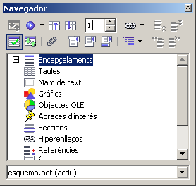
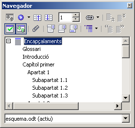

Organització d'un document de gran volum
Un document de gran volum (un exemple clar, em el nostre cas, seria la presentació escrita d'un treball de recerca) necessita estar ben organitzat, ben estructurat en ítems i subítems o, si es vol, en capítols, apartats i subapartats.
Per tal que el document de gran volum sigui clar i entenedor cal que estigui estructurat ja des del principi, des del moment de la seva creació. Si es fa així, tot serà més fàcil ja que LibreOffice Writer us permetrà navegar amb facilitat pel document i fer-ne les modificacions que calgui.
Creació de l'esquelet del document
La forma més fàcil i ordenada de crear el document és començar posant els títols (genèrics, si es vol) de les parts i dels capítols que contindrà.
-
Comenceu creant un nou document de text. Introduïu-hi els següents títols.
Portada (Per defecte)
Índex (Per defecte)
Glossari (Encapçalament 1)
Introducció (Encapçalament 1)
Capítol primer (Encapçalament 1)
Apartat 1 (Encapçalament 2)
Subapartat 1.1 (Encapçalament 3)
Subapartat 1.2 (Encapçalament 3)
Subapartat 1.3 (Encapçalament 3)
Apartat 2 (Encapçalament 2)
Apartat 3 (Encapçalament 2)
Capítol segon (Encapçalament 1)
Apartat 1 (Encapçalament 2)
Apartat 2 (Encapçalament 2)
Capítol tercer (Encapçalament 1)
Apartat 1 (Encapçalament 2)
Apartat 2 (Encapçalament 2)
Conclusions (Encapçalament 1)
Agraïments (Encapçalament 1)
Llista de referències (Encapçalament 1)
Llibres (Encapçalament 2)
Articles (Encapçalament 2)
Catàlegs i publicacions creats per una institució o empresa
(Encapçalament 2)
Material informàtic i audiovisual (Encapçalament 2)
Material consultat a Internet (Encapçalament 2)
Annexos (Encapçalament 1)
Annex A (Encapçalament 2)
Annex B (Encapçalament 2)
-
Apliqueu a cada títol l'estil que hi ha entre parèntesis (això és important!!).
-
Observareu que canvia el format del text en aplicar els diferents estils.
-
Al text genèric que escriureu, observareu que, automàticament, se li aplica l'estil Cos del text.
Navegació per un document de gran volum
Per tal de poder-se desplaçar per un document de gran volum cal tenir visible a la pantalla el Navegador del LibreOffice Writer. Si no hi és, podeu fer-lo aparèixer clicant la icona , prement F5 o per menú Edita | Navegador.

-
Seleccioneu Encapçalaments.
-
Cliqueu la icona Visualització del contingut . Us apareixeran només els encapçalaments que hàgiu posat amb els estils proposats.

-
Fent un doble clic al nom del capítol, apartat o subapartat, saltareu directament a aquella localització.
Reorganització d'un document de gran volum
Actuant sobre les icones que teniu a la dreta del Navegador, podreu reorganitzar el vostre document.
-
Nivells d'encapçalament mostrats: La icona permet determinar quants nivells dels estils emprats com a capçalera seran mostrats al navegador.
-
(Un capítol cap amunt)/ (Un capítol cap avall): Per tal de moure un capítol (i tot el seu contingut) amunt o avall en el document caldrà que el punxeu o arrossegueu amunt o avall dins de la finestra del Navegador, o bé que empreu aquestes icones.
-
(Un nivell cap amunt)/ (Un nivell cap avall): Per tal de convertir un subapartat en apartat (o viceversa) caldrà que empreu aquestes icones.
-
Recupereu el document sistemasolar.odt.
-
Feu aparèixer el Navegador a la vostra pantalla de l'ordinador.
-
Seleccioneu els Encapçalaments i canvieu la visualització del contingut.
-
Feu proves canviant l'ordre dels capítols Formació del Sistema Solar / Descobriment del Sistema Solar / Exploració del Sistema Solar.

|
|

|
|